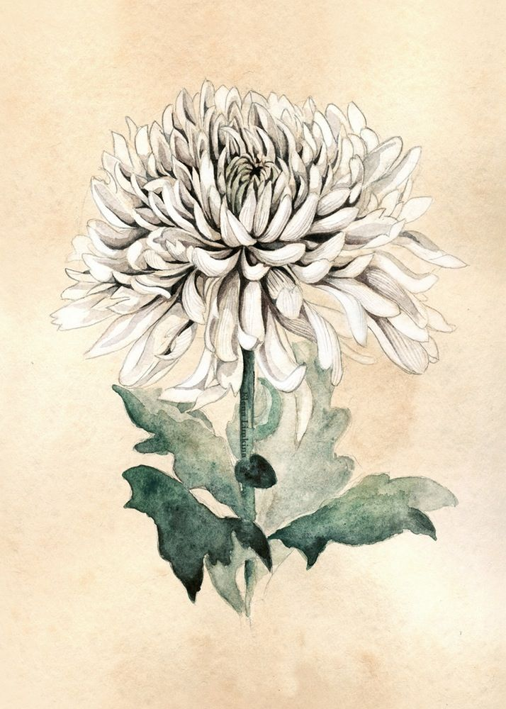

Following your logical thinking, you head straight to the forest and mind the path below you. Its creaking noises and death-defying holes make it difficult for you to run it down smoothly instead you navigate your way around it slowly.

Once on the ground, you notice to your left was the white Chrysanthemum flower but as you made your way towards it, a strange, soothing voice lulls you. It's headed to the completely opposite direction and you follow its enticing sound.
Already far from the path, something smoking in the distance snaps you awake and out of the lullaby's trance. Not a single being was within the forest so far and your danger senses have been tingling... do you go towards it or go back to the path?